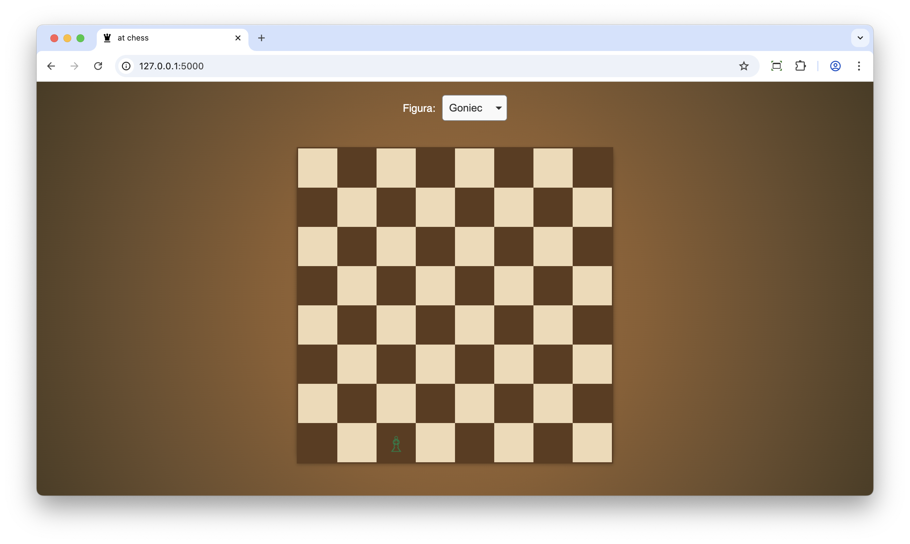
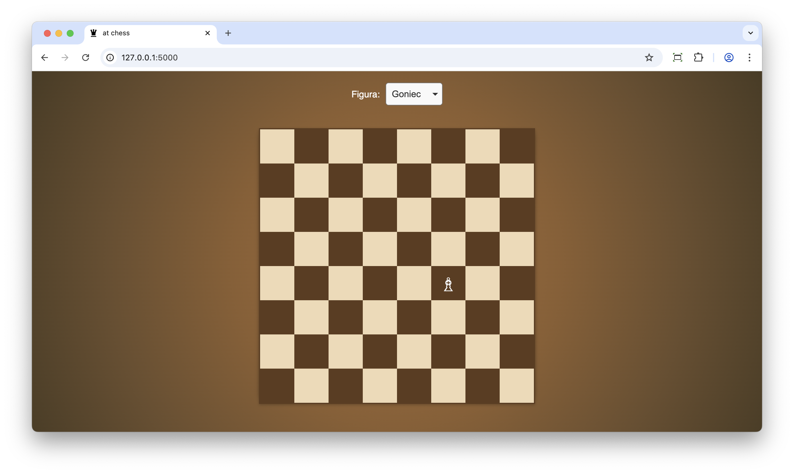

L#09: Testy manualne.
Testy manualne to proces testowania oprogramowania, w którym tester ręcznie wykonuje testy, aby sprawdzić, czy aplikacja zachowuje się zgodnie z oczekiwaniami. W testach manualnych tester wykonuje konkretne kroki, aby zweryfikować funkcjonalność aplikacji, identyfikować błędy i oceniać ogólną jakość produktu.
Głównym celem laboratorium jest zapoznanie się z procesem testowania manualnego w praktyce. Nauczysz się weryfikować działanie aplikacji, analizować jej zachowanie. Dodatkowo przeprowadzisz implementację brakujących funkcji na podstawie analizy wyników testów manualnych.
Pobierz aplikację chess.zip i dobrze przeanalizuj kod. Po uruchomieniu aplikacji gra będzie dostępna pod adresem http://localhost:5000/.
Jak działa gra?
Z pola typu select wybieramy figurkę, która nas interesuje. Inicjujemy ruch poprzez zaznaczenie figury (klikamy na figurkę).

Następnie klikamy w pole docelowe, gdzie życzymy sobie, aby figurka się przemieściła.

Bardzo proszę dokończyć implementację logiki ruchów figurek na planszy szachowej (ruchy figur szachowych: wikipedia). Wzorujemy się na implementacji, która już istnieje. Aplikacja frontendowa została już zaimplementowana. Ruchy figur powinny być testowane manualnie.
Po zakończonej implementacji zastanów się nad refaktoryzacją kodu. Zwróć uwagę na wielokrotne instrukcje warunkowe realizujące poszczególne ruchy. Czy da się zaimplementować to inaczej? (Podpowiedź: Wykorzystaj polimorfizm).
Testy manualne są kluczowym elementem zapewniania jakości oprogramowania, zwłaszcza na wczesnych etapach rozwoju oprogramowania lub przy interfejsach użytkownika, które ciężko w pełni zautomatyzować. Podczas testów wykonywanych ręcznie możemy dostrzec problemy z perspektywy użytkownika końcowego, których nie dostrzeglibyśmy podczas analizy kodu. Pozwalają one również na identyfikację błędów, które nie zostały wykryte podczas testów automatycznych.
Strona główna